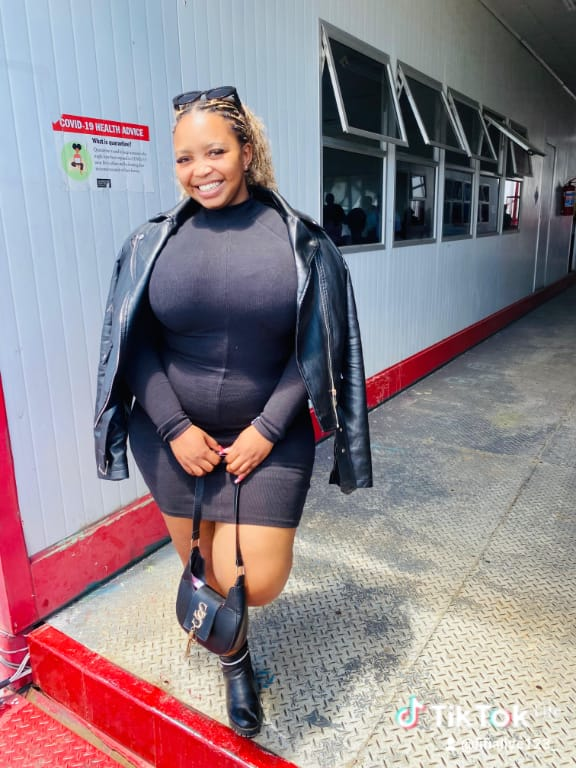
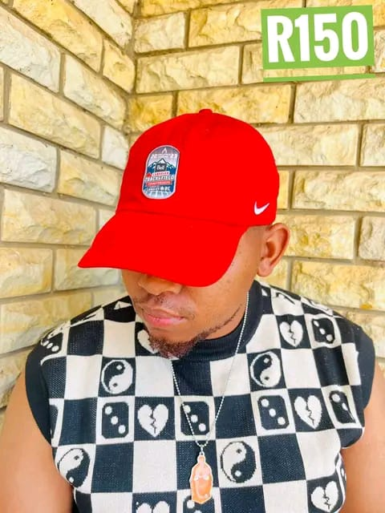

Pulse Magazine is a digital publication focused on lifestyle, culture, technology, and entertainment across Africa and the world. Founded in 2024, our mission is to bring authentic, well-crafted stories to readers who want more than headlines.
We believe in the power of journalism to inform, inspire, and connect communities. Our editorial team is made up of writers, editors, photographers, and designers who are passionate about storytelling in all its forms.
Every article, video, and audio piece we produce goes through a rigorous editorial process to ensure accuracy, fairness, and quality.

Rethabile leads the editorial direction of Pulse. With over 10 years in media, she has worked with publications across Southern Africa and brings deep expertise in both print and digital journalism.
Selloane oversees all long-form and feature content. Her work has been recognized at the African Journalism Awards, and she specializes in culture, identity, and social issues.

Shana covers the intersection of technology and society. She is passionate about making complex topics accessible to everyday readers and often collaborates with researchers and entrepreneurs.
📧 Email: editorial@pulsemag.co.ls
📞 Phone: +266 2231 0000
📍 Address: Maseru, Lesotho
For story tips, corrections, or editorial inquiries, please reach out to our editorial team directly. We respond within 2 business days.